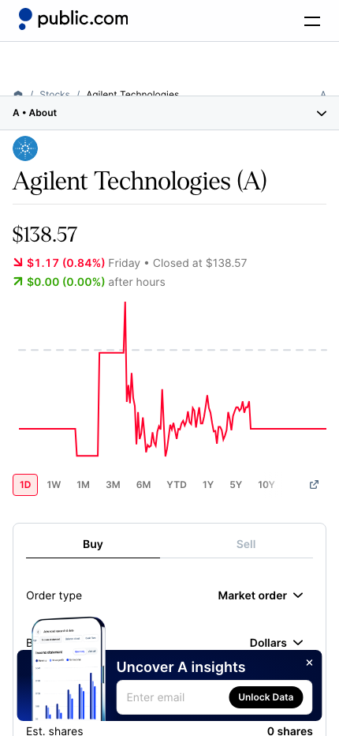

Design improvement · Company research axis
회사 소개의 리서치 축을
피드의 그림 콘텐츠로
범용적인 공시 공부 카드보다, 사용자가 보고 있는 회사가 무엇으로 돈을 벌고 무엇이 흔들릴 수 있는지를 짧은 시각 카드로 보여주는 편이 KRW.O의 리서치 흐름과 맞습니다.
결론
회사 소개의 ‘리서치 축’은 원본 데이터로 유지하고, 피드에는 그중 지금 확인할 한 축만 4:5 카드로 보여주세요. 같은 내용을 이미지와 표로 반복하는 것이 아니라, 이미지는 이해의 입구, 회사 소개는 전체 지도의 역할을 맡습니다.
현재 화면

현재 회사 소개는 ‘사업 활동’과 ‘추적 변수’를 분리해, 클릭하면 공시 근거 리서치로 이어지는 구조다.
개선 아이디어
가장 큰 기회
1. 회사마다 ‘한 장의 투자 지도’를 만든다
피드의 비주얼 카드는 회사 로고만 바꾼 템플릿이 아니라, 해당 회사의 사업 구조를 한 문장으로 잡아주는 표지여야 합니다. 애질런트라면 “장비 판매 + 소모성 시약의 반복 매출”처럼요. 그 아래에는 오늘 클릭할 리서치 축 하나만 둡니다.
왜: Public의 모바일 종목 화면은 회사명·현재 상태·차트를 첫 화면에 밀도 있게 모읍니다. KRW.O에서는 차트 대신 ‘이 회사의 핵심 수익 구조’를 첫 시각 신호로 두는 편이 차별점이 됩니다.
┌──────────────────────────┐
│ A 애질런트 테크놀로지스 │
│ │
│ 장비 + 소모성 시약으로 │
│ 반복 수요를 쌓는 회사 │
│ │
│ 이번에 볼 축 │
│ 소모성 시약과 반복 매출 비중 │
│ 01/03 │
└──────────────────────────┘
정보 구조
2. 이미지에는 한 축, 회사 소개에는 전체 축
회사 소개의 현재 5개 사업 축과 2개 위험 변수를 모두 피드 카드에 넣지 마세요. 피드는 ‘이번 주에 이해할 한 가지’, 회사 소개는 ‘이 회사를 계속 볼 때의 전체 목차’로 역할을 분리하는 편이 읽기 쉽습니다.
왜: Stock Analysis처럼 회사 페이지의 탭과 요약은 전체 탐색에 적합합니다. 하지만 스크롤 피드에서 같은 밀도로 반복하면 카드가 무거워집니다. 카드 탭 시 회사 소개의 해당 축으로 이동하거나, 그 축을 이미 채운 리서치 질문으로 바로 진입시키면 됩니다.
피드 카드 회사 소개
──────── ───────────────
오늘 볼 1개 축 ──탭──→ 사업 활동 5개
짧은 맥락 · 1개 질문 추적 변수 2개
4:5 스와이프 전체 리서치 목차
콘텐츠 운영
3. 회사 데이터와 이미지 편집을 분리한다
리서치 축 문구는 회사 소개의 검수된 프로필을 원본으로 사용하고, 비주얼은 별도의 편집 자산으로 관리하세요. 이미지 생성 결과를 원본 진술처럼 다루지 않으면 사실성·업데이트 문제가 커집니다.
| 층 | 무엇을 담나 | 갱신 기준 |
|---|
| 회사 리서치 프로필 | 사업 서명, 사업 축, 위험 변수, 연결 질문 | 사업 구조나 투자 논지가 바뀔 때 |
| 비주얼 카드 | 표지 이미지·색·아이콘·짧은 설명·선택된 축 | 필요할 때 편집자가 제작 |
| 피드 노출 | 사용자 관심 종목과 최근 공시 맥락에 맞는 카드 1개 | 세션·주간 쿨다운 규칙 |
왜: Simply Wall St의 회사 페이지도 ‘회사 설명’, ‘내러티브’, ‘리스크’를 구분해 보여줍니다. KRW.O도 축 자체와 그 축을 쉽게 이해시키는 그림을 분리해야 오래 운영할 수 있습니다.
처음에 만들 카드 3종
| 카드 | 언제 보이나 | 연결 위치 |
|---|
| 사업 구조 카드 | 처음 보는 관심 종목 또는 회사 소개 첫 방문 | 회사 소개의 ‘사업 활동’ |
| 핵심 변수 카드 | 실적·8-K·뉴스가 특정 축과 연결될 때 | 해당 축의 리서치 질문 |
| 리스크 카드 | 리스크 관련 공시·가이던스·수요 변화가 있을 때 | 회사 소개의 ‘추적 변수’ |
현재 화면에서 유지할 것
- 사업 활동과 추적 변수를 나눈 정보 구조
- 각 축이 막연한 설명이 아니라 공시 근거 리서치로 이어지는 점
- 회사 페이지의 절제된 목록형 밀도 — 이미지는 이 구조를 대체하지 않고 보완해야 함
참고 화면


추가 참고: Simply Wall St의 Agilent 회사 분석은 회사 설명·내러티브·리스크를 구분해 제공한다. [Web]